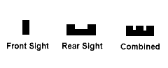
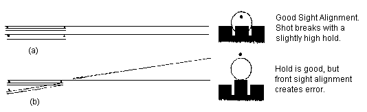
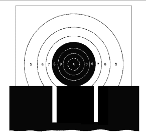
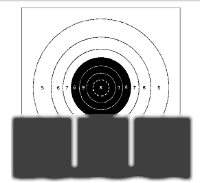

Sight Alignment
Sight alignment is the most important contribution to firing an accurate shot.In order for the bullet to hit the center of the target, the shooter must aim the pistol and give the barrel a definite direction relative to the target.
In theory, accurate aiming is achieved when the shooter places In exact alignment the rear sight with the top and sides of the front sight and holds them In alignment In the aiming area.
A requisite for correct aiming is the ability to maintain the relationship between the front and rear sights.
When aiming the front sight is positioned in the middle of the rear sight notch with an equal light space on each side. The horizontal top surface of the front sight is on the same level as the top horizontal surface of the rear sight notch (Figure 2-1)
A. RELATIONSHIP OF SIGHTS. It is necessary to be acutely aware of the relationship of the rear sight to the clearly defined front sight. Normal vision is such that the rear sight of the pistol will be as nearly In focus as the front sight. Some shooters may be able to see only the notch of the rear sight In sharp focus; the outer extremities may become slightly blurred.

Figure 2-1. The Relationship of the Sights.
1. Angular Shift Error: If the shooter does not observe correct aiming (maintaining the top surface of the centered front sight on a level with the top of the rear sight and equal light space on each side of the front sight) there will be few accurate shots. Most often, he locates the front sight in a different position In the rear notch. This accounts for a greater dispersion of shots on the target, since the bullets will deviate In the direction In which the front sight is positioned In the notch. (Figure 2-2). This aiming error is known as angular shift error.
Figure 2-2. Displacement of the Bullet When There Is Angular Shift Error in the Alignment of the Front Sight.
2. Parallel Shift Error: If the hold (arc of movement) is deviating In near parallel error from the center of the aiming area, the shooter should know that these deflections will not lower the score to the extent of angular shift error. Therefore, sight alignment is the most critical of the two. Thus, the accuracy of a shot depends mainly upon the shooter's ability to consistently maintain correct sight alignment. The main effort should be toward keeping your sights aligned, Holding the pistol perfectly still is desirable but It is not mandatory.

Figure 2-3, Displacement of the Bullet When The Pistol is Shifted: (a) Parallel, (b) Angular

Figure 2-4a, Impossible! The Human Eye Cannot Focus On A Close-UP Object and A Distant Object Simultaneously.
B. POINT OF FOCUS.
Correct sight alignment must be thoroughly understood and practiced. It appears on the surface as a simple thing - this lining up of two objects, front and rear sights. The problem lies in the difficulty in maintaining these two sights in precise alignment while the shooter is maintaining a minimum arc of movement and pressing the trigger to cause the hammer to fall without disturbing sight alignment.
The solution is partly in focusing the eye on the front sight during the delivery of the shot.

Figure 2-4b. Improper. Control of sight alignment is not precise. Distinct focus on target renders sight indistinct. Error incorporated here is the same as Figs 34a and is not as readily apparent.
Figure 2-4c. Proper. Control alignment is precise. Focus limited to front sight only, renders the sights distinct and target indistinct and sight relationship can be controlled constantly.
1. It is imperative to maintain 'front slight point of focus" throughout the sighting and aiming of the pistol. The shooter must concentrate on maintaining the correct relationship between front and rear sight, and the point of focus must be on the front sight during the short period required to deliver the shot. If the focus is displaced forward, and the target is momentarily in clear focus, the ability of shooter to achieve correct sight alignment is jeopardized for that moment. Frequently, this is the moment that the pistol fires. A controlled, accurate shot is impossible under these conditions.
2. When the eye is focused on the target the relatively small movement of the arm appears magnified. However, when the eye is correctly focuses on the front sight this movement appears to have been reduced.
C. CONCENTRATION.
1. If the sights are incorrectly aligned, the net result is an inaccurate shot. Carelessness in obtaining correct sight alignment can usually be traced to the shooter's failure to realize its importance. Many shooters will, in the initial phase of holding, line up the sights in a perfect manner. However, as the firing progresses, and the shooter is concentrating on delivering the shot, he often loses correct sight alignment which he attained in the initial phase of his hold. Usually, when the shooter is unable to maintain a pln-point hold, his concentration on sight alignment wavers. An accurate shot is lost because the shooter is thinking of his arc of movement and not the perfection of sight alignment.
2. Another factor which contributes to the deterioration of sight alignment, is the feeling of anxiety which arises over the apparently stationery pressure on the trigger when attempting to fire. An impulse is generated to got more pressure on the trigger, so that the shot will be delivered. When the shooter thinks about increasing the trigger pressure, a degree of the intense concentration required to maintain correct sight alignment is lost. Even if trigger control and the hold are good, the net result will be a poor shot. Sight alignment must remain uppermost in the shooter's mind throughout the firing of the shot. Positive trigger pressure must be applied involuntarily. Consistently accurate shots are produced when the shooter maintains intense concentration on sight alignment during the application of trigger pressure, while experiencing a minimum arc of movement. Control of the shot is lessened in direct proportion to the loss of concentration on sight alignment.
3. The average, advanced shooter is probably limited in sustained concentration to a period of 3 to 6 seconds. This short space of time is the optimum period in which a controlled shot can be delivered. This concentration interval should be attained simultaneously with acquiring a minimum arc of movement, a point of focus, satisfactory sight alignment, and the involuntary starting of positive trigger pressure. If exact sight alignment is maintained, and the trigger pressure remains positive, the shot will break during the limited time the shooter is able to control his uninterrupted concentration. Result! A dead center hit on the target.
D. THE EYE.
The principal difficulties which confront the shooter during aiming are determined to a great extent by the inherent characteristics of the eye and its work as an optical apparatus. All shooters should familiarize themselves with the optical properties of the human eye as explained in Annex II, entitled "Optical Properties of the Human Eye Relevant to Sight Alignment".